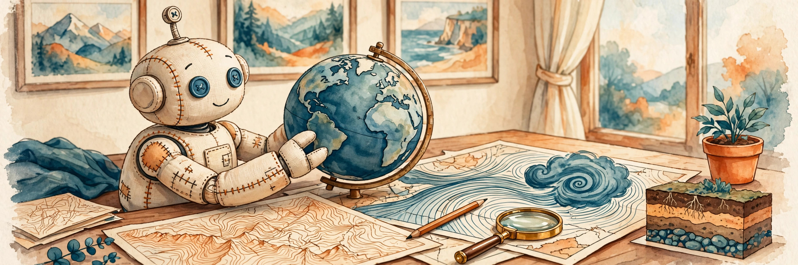

THE GROUND DOWN → THE WATER AROUND → THE WEATHER ABOVE
Everyday
Earth.
Every other room on the STEM bench stands somewhere. This one is about the somewhere: the planet under the bench. The water that cycles through your glass without ever being new, the rocks that sort themselves into three families by how they were born, the soil that takes centuries to make an inch, the deep layers nobody has ever visited and everybody stands on — and the weather, read the ground-level way: fronts, clouds, and a needle that falls before a storm. Tonight's Sky looks up. This room looks down, around, and underfoot.
01 / THE WATER CYCLE
The water in your glass is older than the dinosaurs.
Earth's water is not made and not used up — it is rearranged, endlessly, by one loop with four stages. The Sun lifts it, the cooling air gathers it, gravity drops it, and the land and sea collect it to be lifted again. The dinosaurs drank this water. So did the first forests, and the first fish. Tap each stage and follow one glass of water all the way around.
The water cycle bench — tap a stage
The loop has no start and no waste pipe. The only way off it is off the planet — which is why astronauts recycle their water with great care, and why Earth's supply, cycled well, does not run out. What runs out, locally, is clean water in the right place: a different problem, and a solvable one.
Older than the dinosaurs — honestly
THE HONESTY LINE, WITH ITS EDGES SHOWING
The claim survives a careful reading: Earth's water arrived billions of years before the first dinosaur (~240 million years ago), and the same water has cycled ever since. The edges: individual water molecules are not immortal — chemistry splits and rebuilds them, in your body and in the air. What is ancient is the water itself, the great stock of it, passed hand to hand — cloud, river, dinosaur, glacier, tap — for longer than there have been hands, or dinosaurs.
Not new since before dinosaurs. Recycled, molecule by molecule, ever since.
02 / ROCKS
Three families, told by how each was born.
Every rock on Earth belongs to one of three families, and the family is a birth story, not a looks contest. Igneous rocks froze from melt. Sedimentary rocks were laid down in layers and pressed. Metamorphic rocks are other rocks, changed by heat and pressure without melting. Pick up a specimen and the sorter will tell you its family and its story.
The rock sorter — nine rocks you actually meet
The countertop test: a speckled kitchen counter is usually granite (igneous, cooled slowly underground). The grand white floor in an old bank is often marble — which began as limestone, a sedimentary rock, until heat and pressure promoted it. Same stone family tree, two of its branches, in one trip to the bank.
The rock cycle — the wheel that turns them all
EVERY FAMILY BECOMES THE OTHERS, GIVEN TIME
Given millions of years, any rock can become any other. Weather crumbles all of them into sediment; burial and pressure make sedimentary rock; deeper burial and heat make metamorphic rock; melting makes magma, and magma cools into igneous rock again. The three families are not kinds of stone so much as stages of one slow wheel — and the wheel's motor is the Earth's own heat, leaking up from the deep layers in section 04.
Rocks are not permanent. They are just slow.
Reading a rock in the wild
THREE QUESTIONS, IN ORDER
Can you see crystals or speckles? Probably igneous — slow cooling grows big crystals, fast cooling keeps them tiny. Can you see layers, grains of sand, or shells? Sedimentary — something was laid down. Is it banded, swirled, or splits into hard flat sheets? Metamorphic — something was squeezed. That is the sorter's whole method, and it works on a driveway pebble as well as a cliff.
Crystals, layers, or bands: melt, settling, or squeezing.
03 / SOIL
Dirt is a layer cake, and the top layer is the treasure.
Dig a hole a metre deep in old ground and the walls are striped: dark at the top, pale in the middle, broken rock at the bottom. Soil scientists read those stripes as horizons and letter them O, A, B, C, R. Tap a layer — the garden lives in one of them, and it is the slowest thing in this room to replace.
The soil bench — tap a horizon
Depths vary enormously from place to place — a desert's topsoil can be a whisper, an old prairie's a metre of black gold. The diagram is drawn to be read, not to be measured; the order, not the thickness, is the lesson.
An inch of topsoil costs centuries
WHY EROSION IS A ONE-WAY DOOR
Topsoil is made by weathering rock and rotting plants together, grain by grain. The commonly cited range: forming one inch of it takes a few hundred to a thousand years, depending on climate and rock — the USDA's often-quoted figure is around 500 years. A single hard rain on bare, sloped ground can wash away in an afternoon what took since before your town existed to build. That is why gardeners mulch, why farmers plant cover crops, and why the A horizon gets a whole bench.
Made by the century. Lost by the storm. Garden accordingly.
04 / THE DEEP EARTH
Nobody has dug past the skin.
Under the soil and the rock lies the rest of the planet: 6,371 kilometres of it, in four layers. Everything humans have ever dug — every mine, well, and borehole — is still inside the outermost one. Give the bench a depth and it will tell you what layer you are standing in, and how much planet is still below you.
The depth bench — how far down is that?
The crust's thickness is a range — 5 to 10 km under the oceans, 30 to 50 under the continents, up to about 70 under the great mountain ranges. The bench gives the crust its deepest figure, 70 km, and it still draws as a hairline at true scale. Some comparisons flatter the digging. This one doesn't.
How do we know, if nobody's been?
EARTHQUAKES ARE THE X-RAY
Every layer boundary on this page was found by listening. Earthquake waves speed up, slow down, and bend as they pass through the planet, and some kinds cannot travel through liquid at all — which is how we know the outer core is liquid without ever touching it. Seismometers on the far side of the Earth from a big quake receive a shadow where the liquid core blocked the waves. The planet rings like a bell, and the ringing is the report.
Never visited. Thoroughly measured. The waves did the visiting.
The core runs the compass
THE SURVIVAL GUIDE'S NEEDLE STARTS HERE
The liquid outer core is a swirling ocean of iron, and its motion generates the Earth's magnetic field — the field that turns compass needles, shields the surface from solar wind, and points the Survival Guide's direction-finding north. The deepest layer of this room is the engine behind the most useful tool in that one.
Open The Survival Guide → — where the core's field becomes a direction.
05 / WEATHER FROM THE GROUND
Read the map. Watch the sky. Check the needle.
Weather is the water cycle with somewhere to be. Before the apps, it was read three ways, and the three still work: the map (where the pressure is high, where it is low, and where the fronts between air masses are marching), the clouds (the sky's own bulletin, posted overhead), and the barometer (one needle that falls before a storm). On a map, an H marks high pressure — air sinking, skies fair — and an L marks low pressure, air rising into cloud and storm. The lines between them are the fronts.
The front bench — what crosses the line brings
On the printed map, a cold front is a line of triangles and a warm front a line of semicircles, both pointing the way the front is travelling. If the symbols are marching toward your town, their weather is too.
The cloud spotter — four families worth knowing
The barometer bench — read the needle's trend
Sea-level pressure averages 1013 hPa (29.92 inHg), and weather lives in the departures. The number matters less than the trend: it is the falling that warns, not the low reading itself. Many phones carry a real barometer sensor — the Survival Guide's phone compass has a quieter sibling.
A forecast is a probability, not a promise
THE HONESTY LINE FOR THE WHOLE SECTION
"A 30% chance of rain" is not the forecaster hedging — it is the honest shape of the knowledge: in thirty out of a hundred past days set up like this one, it rained. The atmosphere is a fluid being measured at points and modelled on grids; its forecasts are good and getting better, and they are still odds, not appointments. Dress for the odds. And one rule outranks every probability ever printed:
When thunder roars, go indoors. Lightning is not a probability to weigh — it is the one weather call that is always certain.
06 / LINKS OUT
Links out.
Every destination below was checked live on 19 November 2026, and each opens in a new tab. The shelf leaves this page; the benches above never do.
The ideas, one by one — Wikipedia
- Earth science ↗
The whole subject this room samples: the ground, the water, the air, and how they trade with each other.
- Water cycle ↗
The loop in full — reservoirs, residence times, and how much water sits in ice, ground, and air.
- Rock (geology) ↗
What a rock is, the three families treated properly, and how geologists tell them apart.
- Rock cycle ↗
The wheel of section 02 in full: every path from every family to every other.
- Soil horizon ↗
The lettered layers, including the extra horizons real soils add to the basic five.
- Internal structure of Earth ↗
The deep layers in full: the boundaries, the evidence from earthquake waves, and the core's strange weather of its own.
- Weather front ↗
All the fronts — cold, warm, stationary, occluded — and the symbols the map draws them with.
- Cloud ↗
The full classification: genera, heights, and the Latin behind the four families the spotter teaches.
The survey and the forecast — USGS & NOAA
- USGS · The Water Cycle ↗
The US Geological Survey's own diagram and tour of the loop — the source of this room's 90% figure for ocean evaporation.
- National Weather Service ↗
NOAA's forecast office and the real thing behind the barometer bench: your local forecast, the actual maps, and the warnings. When the sky matters, this is the page.
- NOAA ↗
The National Oceanic and Atmospheric Administration itself — oceans, atmosphere, satellites, and climate, from the people who measure all four.
Weather in your pocket
- Travel Kit · releases ↗
The pocket version of the sky-watching rooms: the free Travel Kit app carries Weather Everywhere — this room's travelling cousin — alongside Tonight's Sky, Find It, the Radio Room, and the Survival Guide. Download it there.
The day, and a school that studies it
- EARTHDAY.ORG ↗
The organisation behind Earth Day, April 22 — its history from 1970, and the campaigns that run all year.
- Earth Day at UC Davis ↗
UC Davis's own Earth Day page — and the school has a claim few can match: it ran one of the first Earth Day celebrations anywhere. The Earth Day concept John McConnell described at a San Francisco lecture was carried back to Davis by an Experimental College student; art historian José Argüelles and some 400 of his students turned it into Whole Earth Week, 17–21 March 1970 — a month before the April 22 Earth Day. (Earth Day itself was founded nationally, by Senator Gaylord Nelson's call — Davis's honour is the early celebration, not the founding.)
- UC Davis Library · Traditions exhibit ↗
The library's own record of that history: McConnell's lecture, Argüelles's classes, and the festival that grew out of Whole Earth Week — the Whole Earth Festival, still held every Mother's Day weekend and an official UC Davis tradition.
07 / KEEP GOING
Sister rooms.
Tonight's Sky
We look down; that room looks up. The same planet, the other direction: the live night sky, the planets, and the satellites passing over the ground this room just finished describing.
Weather Everywhere
The weather, worldwide: an atlas of places and seasons, ocean-temperature experiments, and faraway weather connections — this room's ground-level craft, at planetary scale.
The Survival Guide
Earth skills with the stakes in: finding and boiling water, reading direction and weather outdoors, and the compass whose needle answers to this room's liquid-iron core.
08 / HELP
Help — how Everyday Earth works.
The water cycle
The bench draws one landscape — lake, mountain, cloud — and lights the stage you tap: evaporation's rising wisps off the water, condensation's droplets gathering in the cloud, precipitation's rain lines, and collection's river running home. Each stage prints its steps, and names the next stage in the loop, because the loop is the lesson: no stage is first, and none is last.
Rocks and their families
The sorter holds nine rocks — three per family — and answers with the family's birth story, how that particular rock formed, and where you actually see it. The identification method is the three questions in the wild card: visible crystals (igneous), layers or grains or shells (sedimentary), bands or hard flat sheets (metamorphic). The rock cycle card gives the whole wheel in brief; the full cycle is one of the Links Out destinations.
Soil, horizon by horizon
The soil bench draws the five horizons — O (organic litter), A (topsoil), B (subsoil), C (parent material), R (bedrock) — and tapping a layer or its button prints what that layer is and does. The drawing is deliberately not to scale; horizon thicknesses vary from centimetres to metres, and the page says so. The topsoil card carries the formation times: an inch in a few hundred to a thousand years, which is why erosion is treated here as a one-way door.
Down to the core
The depth bench takes any depth from 0 to 6,371 km and reports the layer, what that layer is, and the percentage of the way to the centre. The bar above it is drawn at true scale, which is the section's whole argument: at true scale the crust — given its deepest figure, 70 km — is a hairline, and the deepest mine (3.9 km), the deepest trench (10.9 km), and the deepest borehole (12.3 km) are all scratches within it. Layer facts come from seismology, as the earthquake card explains.
Weather from the ground
Three benches teach the three ground-level instruments. The front bench contrasts the cold front (a bulldozer: brief storms, then cooler dry air) with the warm front (a ramp: long steady rain, then warmer air). The cloud spotter covers the four families a watcher actually uses. The barometer bench converts hPa to inHg and reads the three-hour trend by the traditional rules of thumb — rising, steady, falling, and the two quick versions — and prints its own limit: one instrument is a witness, not a forecast service.
The links shelf
Four groups: the ideas one by one on Wikipedia; the survey and the forecast from the USGS and NOAA; the Travel Kit, carrying Weather Everywhere in pocket form; and the day and the school — EARTHDAY.ORG, and UC Davis, whose students ran one of the first Earth Day celebrations anywhere (Whole Earth Week, March 1970, a month before the April 22 founding — the shelf keeps those two threads straight, and the Library's exhibit is the record). Inside the collection, this room links down-and-up with Tonight's Sky, sideways to Weather Everywhere, and outdoors to the Survival Guide.
Honest limits — slow, deep, and probable
Three limits, stated rather than hidden. The deep Earth is measured, never visited: every depth here is seismology's, and the crust's thickness is a range the bench resolves in the crust's favour. Soil and rock timescales are ranges, not dates — an inch of topsoil in a few hundred to a thousand years, a rock cycle turn in millions. And weather knowledge is probabilistic all the way down: a forecast is odds, a barometer is a witness, and the one certainty — thunder means go indoors — is printed as a rule, not a percentage.
Works offline?
Yes. The cycle, the sorter, the soil, the depth bench, the weather benches, and this Help all run from the files in this folder — including inside the desktop app. Only the Links Out shelf needs the internet, because those pages live on other people's sites.